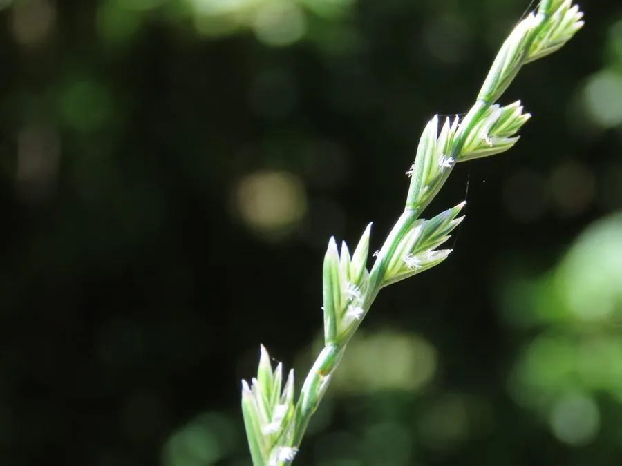

农作物与经济植物 · 植物界
黑麦草 Lolium perenne

禾本科黑麦草属多年生草本，叶片深绿、分蘖密集，耐践踏、再生快，是草坪与牧草兼用的重要禾本科草种。
- 分类
- 门被子植物门纲木兰纲目禾本目科禾本科属黑麦草属
- 栖息环境
- 温带凉爽湿润地区，耐寒、耐践踏、再生能力强
- 地理分布
- 原产欧洲、北非与西亚；中国南北各地及世界温带地区广泛栽培
- 保护级别
- IUCN 暂无评估；栽培极广，野生种群未受明显威胁
物种志
黑麦草为多年生草本，高 30–90 厘米，具细弱根状茎，茎直立或斜升，分蘖密集。叶片线形，长 10–20 厘米，深绿色，上面粗糙，叶鞘抱茎。穗状花序顶生，长 10–20 厘米，小穗互生于穗轴两侧，含 5–11 朵小花，无芒；颖果长圆形，成熟时黄褐色。
黑麦草原产欧洲、北非与西亚，现广泛栽培于世界温带地区，中国南北均有种植，耐寒、耐践踏、再生能力强，是草坪与牧草兼用的重要草种。它的叶片深绿、质地细腻，常用于高尔夫球场、运动场与庭院草坪；茎叶富含蛋白质，也可作牛、羊、兔的饲料。黑麦草生长迅速，播种后一个多月即可成坪，是冷季型草坪的主力草种之一。
形态与习性
- 株高30–90 厘米，分蘖密集
- 叶片线形，深绿色，长 10–20 厘米
- 花期5–7 月，穗状花序顶生
- 光照喜光，也耐半阴
- 水分喜湿润，不耐长期干旱
- 土壤以疏松肥沃、排水良好的壤土为佳
- 主要用途草坪、牧草、水土保持与冬季覆盖
趣味知识
- 黑麦草是冷季型草坪的主力草种，秋冬仍能保持深绿色。
- 它的再生能力极强，修剪或啃食后很快就能重新长出新叶。
- 黑麦草播种后一个多月即可成坪，常用于运动场与高尔夫球场。
- 它虽然叫“黑麦草”，却与黑麦不同属，主要用作草坪与牧草。